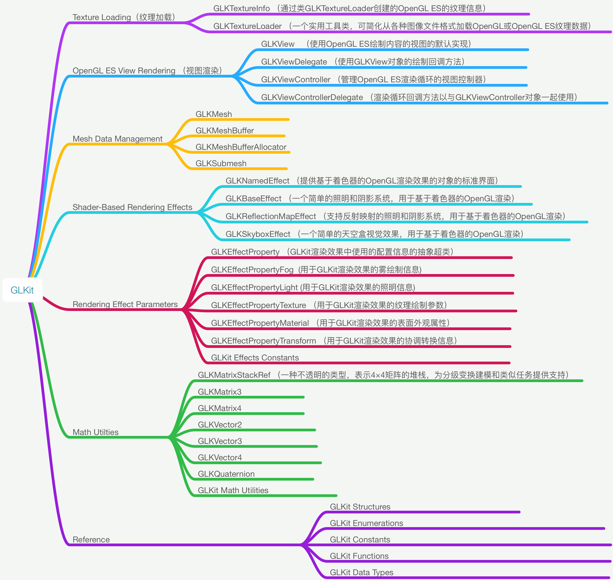
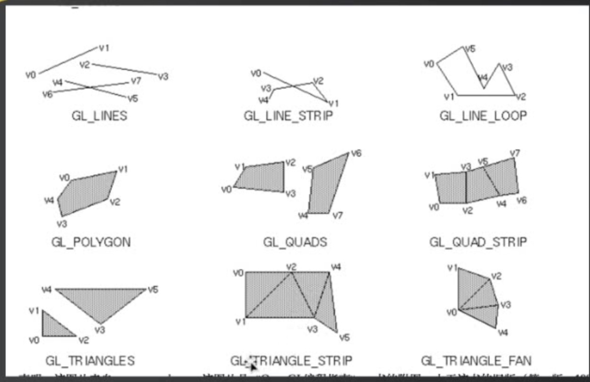

OpenGL ES - - GLKit（GLKBaseEffect）
Speed up OpenGL ES or OpenGL app development. Use math libraries, background texture loading, pre-created shader effects, and a standard view and view controller to implement your rendering loop.
加快OpenGL ES或OpenGL应用程序开发。 使用数学库，背景纹理加载，预先创建的着色器效果以及标准视图和视图控制器来实现渲染循环。

以一个简单的案例来使用 GLKBaseEffect
GLKBaseEffect is designed to simplify visual effects common to many OpenGL applications today.
GLKBaseEffect旨在简化当今许多OpenGL应用程序常见的视觉效果。GLKBaseEffect is program based and, with the binding of its underlying GLSL program
GLKBaseEffect是基于程序的，并且通过其基础GLSL程序的绑定GLKBaseEffect requires at least an OpenGL Core Profile. An appropriate context must be created and made current prior to instantiating and initializing GLKBaseEffect objects.
使用GLKBaseEffect的规范步骤是
(1) 分配并初始化GLKBaseEffect的一个实例
directionalLightEffect = [[GLKBaseEffect alloc] init];(2) 在效果上设置所需的属性
// Configure light0 directionalLightEffect.light0.position = lightPosition; directionalLightEffect.light0.diffuseColor = diffuseColor; directionalLightEffect.light0.ambientColor = ambientColor; // Configure material directionalLightEffect.material.diffuseColor = materialDiffuseColor; directionalLightEffect.material.ambientColor = materialAmbientColor; directionalLightEffect.material.specularColor = materialSpecularColor; directionalLightEffect.material.shininess = 10.0;(3) 优选用顶点数组对象初始化顶点属性/顶点数组状态为要绘制的模型或场景
glGenVertexArraysOES(1, &vaoName); glBindVertexArrayOES(vaoName); // 为每个顶点属性创建并初始化VBO // 下面的例子展示了一个设置位置顶点属性的例子. // 为每个额外的所需属性重复以下步骤：normal，color，texCoord0，texCoord1. glGenBuffers(1, &positionVBO); glBindBuffer(GL_ARRAY_BUFFER, positionVBO); glBufferData(GL_ARRAY_BUFFER, vboSize, dataBufPtr, GL_STATIC_DRAW); glVertexAttribPointer(GLKVertexAttribPosition, size, type, normalize, stride, NULL); glEnableVertexAttribArray(GLKVertexAttribPosition); ...针对其他所需的顶点属性重复上述步骤 glBindVertexArrayOES(0); // unbind the VAO we created above(4) 对于每个绘制的帧：更新每帧更改的属性。 通过调用 - [GLKBaseEffect prepareToDraw] 同步更改的效果状态。用效果画出模型. 用效果画出模型
directionalLightEffect.transform.modelviewMatrix = modelviewMatrix; [directionalLightEffect prepareToDraw]; glBindVertexArrayOES(vaoName); glDrawArrays(GL_TRIANGLE_STRIP, 0, vertCt);
详细代码：DEMO
OpenGL ES - GLSL
不采用GLKBaseEffect，使用编译链接自定义的着色器（shader）。用简单的glsl语言来实现顶点、片元着色器，并图形进行简单的变换。

一、创建图层
CAEAGLLayer
/* CAEAGLLayer is a layer that implements the EAGLDrawable protocol,
* allowing it to be used as an OpenGLES render target. Use the
* `drawableProperties' property defined by the protocol to configure
* the created surface. */CAEAGLLayer是一个实现EAGLDrawable协议的层，
*允许它用作OpenGLES渲染目标。 使用
*协议定义的`drawableProperties'属性进行配置
*创建的表面。
- 创建图层
设置放大倍数
[self setContentScaleFactor:[[UIScreen mainScreen]scale]];将图层设为不透明（默认是透明的）
self.myEagLayer.opaque = YES;设置
drawableProperties属性,这里设置不维持渲染内容以及颜色格式为RGBA8self.myEagLayer.drawableProperties = [NSDictionary dictionaryWithObjectsAndKeys:[NSNumber numberWithBool:false],kEAGLDrawablePropertyRetainedBacking,kEAGLColorFormatRGBA8,kEAGLDrawablePropertyColorFormat,nil];
/************************************************************************/
/* Keys for EAGLDrawable drawableProperties dictionary */
/* */
/* kEAGLDrawablePropertyRetainedBacking: */
/* Type: NSNumber (boolean) */
/* Legal Values: True/False */
/* Default Value: False */
/* Description: True if EAGLDrawable contents are retained after a */
/* call to presentRenderbuffer. False, if they are not */
/* */
/* kEAGLDrawablePropertyColorFormat: */
/* Type: NSString */
/* Legal Values: kEAGLColorFormat* */
/* Default Value: kEAGLColorFormatRGBA8 */
/* Description: Format of pixels in renderbuffer */
/************************************************************************/
- kEAGLDrawablePropertyRetainedBacking: 表示绘图表面显示后，是否保留其内容。这个key的值，是一个通过NSNumber包装的bool值。如果是false，则显示内容后不能依赖于相同的内容，ture表示显示后内容不变。一般只有在需要内容保存不变的情况下，才建议设置使用,因为会导致性能降低、内存使用量增减。一般设置为flase.
- kEAGLDrawablePropertyColorFormat: 可绘制表面的内部颜色缓存区格式，这个key对应的值是一个NSString指定特定颜色缓存区对象。默认是kEAGLColorFormatRGBA8
- kEAGLColorFormatRGBA8：32位RGBA的颜色，4*8=32位
- kEAGLColorFormatRGB565：16位RGB的颜色，
- kEAGLColorFormatSRGBA8：sRGB代表了标准的红、绿、蓝，即CRT显示器、LCD显示器、投影机、打印机以及其他设备中色彩再现所使用的三个基本色素。sRGB的色彩空间基于独立的色彩坐标，可以使色彩在不同的设备使用传输中对应于同一个色彩坐标体系，而不受这些设备各自具有的不同色彩坐标的影响。
二、创建上下文
指定OpenGL ES 渲染API版本，我们使用2.0
EAGLRenderingAPI api = kEAGLRenderingAPIOpenGLES2;创建图形上下文
EAGLContext *context = [[EAGLContext alloc] initWithAPI:api];判断是否创建成功
if (!context) { NSLog(@"Create context failed!"); return; }设置图形上下文
if (![EAGLContext setCurrentContext:context]) { NSLog(@"setCurrentContext failed!"); return; }将局部context，变成全局的
self.myContext = context;
三、清空缓存区
导入框架#import
创建2个帧缓存区，渲染缓存区，帧缓存区
@property (nonatomic , assign) GLuint myColorRenderBuffer; @property (nonatomic , assign) GLuint myColorFrameBuffer;清空缓存区
glDeleteBuffers(1, &_myColorRenderBuffer); self.myColorRenderBuffer = 0; glDeleteBuffers(1, &_myColorFrameBuffer); self.myColorFrameBuffer = 0;
四、设置RenderBuffer
定义一个缓存区
GLuint buffer;申请一个缓存区标志
glGenRenderbuffers(1, &buffer); //同 glGenRenderbuffers(1, &buffer); //赋值 self.myColorRenderBuffer = buffer;将标识符绑定到GL_RENDERBUFFER
glBindRenderbuffer(GL_RENDERBUFFER, self.myColorRenderBuffer);myColorRenderBuffer渲染缓存区分配存储空间
[self.myContext renderbufferStorage:GL_RENDERBUFFER fromDrawable:self.myEagLayer];注意：frame buffer仅仅是管理者，不需要分配空间； render buffer的存储空间的分配，对于不同的render buffer，使用不同的API进行分配， 而只有分配空间的时候，render buffer句柄才确定其类型
五、设置FrameBuffer
定义一个缓存区
GLuint buffer;申请一个缓存区标志
glGenRenderbuffers(1, &buffer); //赋值 self.myColorFrameBuffer = buffer;将标识符绑定到GL_FRAMEBUFFER
glBindFramebuffer(GL_FRAMEBUFFER, self.myColorFrameBuffer);renderbuffer跟framebuffer进行绑定,将_myColorRenderBuffer 通过glFramebufferRenderbuffer函数绑定到GL_COLOR_ATTACHMENT0上。
glFramebufferRenderbuffer(GL_FRAMEBUFFER, GL_COLOR_ATTACHMENT0, GL_RENDERBUFFER, self.myColorRenderBuffer);//接下来，可以调用OpenGL ES进行绘制处理，最后则需要在EGALContext的OC方法进行最终的渲染绘制。这里渲染的color buffer,这个方法会将buffer渲染到CALayer上。- (BOOL)presentRenderbuffer:(NSUInteger)target;
六、开始绘制
设置颜色、设置视口大小
//设置清屏颜色 glClearColor(0.0f, 1.0f, 0.0f, 1.0f); //清除屏幕 glClear(GL_COLOR_BUFFER_BIT); CGFloat scale = [[UIScreen mainScreen]scale]; //设置视口大小 glViewport(self.frame.origin.x * scale, self.frame.origin.y * scale, self.frame.size.width * scale, self.frame.size.height * scale);读取顶点着色程序、片元着色程序
NSString *vertFile = [[NSBundle mainBundle]pathForResource:@"shaderv" ofType:@"vsh"]; NSString *fragFile = [[NSBundle mainBundle]pathForResource:@"shaderf" ofType:@"fsh"];加载shader
self.myPrograme = [self loadShaders:vertFile Withfrag:fragFile];//见附链接
glLinkProgram(self.myPrograme); GLint linkStatus; //获取链接状态 glGetProgramiv(self.myPrograme, GL_LINK_STATUS, &linkStatus); if (linkStatus == GL_FALSE) { GLchar message[512]; glGetProgramInfoLog(self.myPrograme, sizeof(message), 0, &message[0]); NSString *messageString = [NSString stringWithUTF8String:message]; NSLog(@"Program Link Error:%@",messageString); return; }使用program
glUseProgram(self.myPrograme);设置顶点、纹理坐标
...处理顶点数据
glVertexAttribPointer(position, 3, GL_FLOAT, GL_FALSE, sizeof(GLfloat) * 5, NULL);处理纹理数据
glVertexAttribPointer(textCoor, 2, GL_FLOAT, GL_FALSE, sizeof(GLfloat)*5, (float *)NULL + 3);加载纹理
获取图片的CGImageRef
读取图片的大小，宽和高
获取图片字节数 宽高4（RGBA）
创建上下文
在CGContextRef上绘图 ,解决图片倒置的方法
画图完毕就释放上下文
绑定纹理到默认的纹理ID（这里只有一张图片，故而相当于默认于片元着色器里面的
设置纹理属性
载入纹理2D数据
绑定纹理
释放spriteData
获取shader里面的变量, 模型视图变换传值
绘制并显示缓存数据 presentRenderbuffer
glDrawArrays(GL_TRIANGLES, 0, 6); [self.myContext presentRenderbuffer:GL_RENDERBUFFER];
附
- frame buffer 和 render buffer 关系
buffer分为frame buffer 和 render buffer2个大类。其中frame buffer 相当于render buffer的管理者。frame buffer object即称FBO，常用于离屏渲染缓存等。render buffer则又可分为3类。colorBuffer、depthBuffer、stencilBuffer。
加载shader
- 定义2个零时着色器对象
- 创建program
- 编译顶点着色程序、片元着色器程序
- 读取文件路径字符串
- 创建一个shader（根据type类型）
- 将顶点着色器源码附加到着色器对象上
- 把着色器源代码编译成目标代码
- 创建最终的程序
- 释放不需要的shader
-(GLuint)loadShaders:(NSString *)vert Withfrag:(NSString *)frag {
//定义2个零时着色器对象
GLuint verShader, fragShader;
//创建program
GLint program = glCreateProgram();
//编译顶点着色程序、片元着色器程序
//参数1：编译完存储的底层地址
//参数2：编译的类型，GL_VERTEX_SHADER（顶点）、GL_FRAGMENT_SHADER(片元)
//参数3：文件路径
[self compileShader:&verShader type:GL_VERTEX_SHADER file:vert];
[self compileShader:&fragShader type:GL_FRAGMENT_SHADER file:frag];
//创建最终的程序
glAttachShader(program, verShader);
glAttachShader(program, fragShader);
//释放不需要的shader
glDeleteShader(verShader);
glDeleteShader(fragShader);
return program;
}
//链接shader
- (void)compileShader:(GLuint *)shader type:(GLenum)type file:(NSString *)file{
//读取文件路径字符串
NSString* content = [NSString stringWithContentsOfFile:file encoding:NSUTF8StringEncoding error:nil];
const GLchar* source = (GLchar *)[content UTF8String];
//创建一个shader（根据type类型）
*shader = glCreateShader(type);
//将顶点着色器源码附加到着色器对象上。
//参数1：shader,要编译的着色器对象 *shader
//参数2：numOfStrings,传递的源码字符串数量 1个
//参数3：strings,着色器程序的源码（真正的着色器程序源码）
//参数4：lenOfStrings,长度，具有每个字符串长度的数组，或NULL，这意味着字符串是NULL终止的
glShaderSource(*shader, 1, &source,NULL);
//把着色器源代码编译成目标代码
glCompileShader(*shader);
}
- 设置纹理
//设置纹理
- (GLuint)setupTexture:(NSString *)fileName {
//1、获取图片的CGImageRef
CGImageRef spriteImage = [UIImage imageNamed:fileName].CGImage;
//判断图片是否获取成功
if (!spriteImage) {
NSLog(@"Failed to load image %@", fileName);
exit(1);
}
//2、读取图片的大小，宽和高
size_t width = CGImageGetWidth(spriteImage);
size_t height = CGImageGetHeight(spriteImage);
//3.获取图片字节数 宽*高*4（RGBA）
GLubyte * spriteData = (GLubyte *) calloc(width * height * 4, sizeof(GLubyte));
//4.创建上下文
/*
参数1：data,指向要渲染的绘制图像的内存地址
参数2：width,bitmap的宽度，单位为像素
参数3：height,bitmap的高度，单位为像素
参数4：bitPerComponent,内存中像素的每个组件的位数，比如32位RGBA，就设置为8
参数5：bytesPerRow,bitmap的没一行的内存所占的比特数
参数6：colorSpace,bitmap上使用的颜色空间 kCGImageAlphaPremultipliedLast：RGBA
*/
CGContextRef spriteContext = CGBitmapContextCreate(spriteData, width, height, 8, width*4,CGImageGetColorSpace(spriteImage), kCGImageAlphaPremultipliedLast);
//5、在CGContextRef上绘图
/*
CGContextDrawImage 使用的是Core Graphics框架，坐标系与UIKit 不一样。UIKit框架的原点在屏幕的左上角，Core Graphics框架的原点在屏幕的左下角。
CGContextDrawImage
参数1：绘图上下文
参数2：rect坐标
参数3：绘制的图片
*/
CGRect rect = CGRectMake(0, 0, width, height);
//使用默认方式绘制，发现图片是倒的。
CGContextDrawImage(spriteContext, CGRectMake(0, 0, width, height), spriteImage);
/*
解决图片倒置的方法(2):
CGContextTranslateCTM(spriteContext, rect.origin.x, rect.origin.y);
CGContextTranslateCTM(spriteContext, 0, rect.size.height);
CGContextScaleCTM(spriteContext, 1.0, -1.0);
CGContextTranslateCTM(spriteContext, -rect.origin.x, -rect.origin.y);
CGContextDrawImage(spriteContext, rect, spriteImage);
*/
//6、画图完毕就释放上下文
CGContextRelease(spriteContext);
//5、绑定纹理到默认的纹理ID（这里只有一张图片，故而相当于默认于片元着色器里面的colorMap，如果有多张图不可以这么做）
glBindTexture(GL_TEXTURE_2D, 0);
//设置纹理属性
/*
参数1：纹理维度
参数2：线性过滤、为s,t坐标设置模式
参数3：wrapMode,环绕模式
*/
glTexParameteri( GL_TEXTURE_2D, GL_TEXTURE_MIN_FILTER, GL_LINEAR );
glTexParameteri( GL_TEXTURE_2D, GL_TEXTURE_MAG_FILTER, GL_LINEAR );
glTexParameteri( GL_TEXTURE_2D, GL_TEXTURE_WRAP_S, GL_CLAMP_TO_EDGE);
glTexParameteri( GL_TEXTURE_2D, GL_TEXTURE_WRAP_T, GL_CLAMP_TO_EDGE);
float fw = width, fh = height;
//载入纹理2D数据
/*
参数1：纹理模式，GL_TEXTURE_1D、GL_TEXTURE_2D、GL_TEXTURE_3D
参数2：加载的层次，一般设置为0
参数3：纹理的颜色值GL_RGBA
参数4：宽
参数5：高
参数6：border，边界宽度
参数7：format
参数8：type
参数9：纹理数据
*/
glTexImage2D(GL_TEXTURE_2D, 0, GL_RGBA, fw, fh, 0, GL_RGBA, GL_UNSIGNED_BYTE, spriteData);
//绑定纹理
/*
参数1：纹理维度
参数2：纹理ID,因为只有一个纹理，给0就可以了。
*/
glBindTexture(GL_TEXTURE_2D, 0);
//释放spriteData
free(spriteData);
return 0;
}
详细代码：DEMO
文章目录
OpenGL简单介绍及实践
什么是OpenGL (Open Graphics Library)
OpenGL 是一种应用程序编程接口（Application Programming Interface,API）,
用于渲染2D、3D矢量图形。
相关程序库
OpenGL被设计为只有输出的，所以它只提供渲染功能。核心API没有窗口系统、音频、打印、键盘／鼠标或其他输入设备的概念。
几个库创建在OpenGL之上，提供了OpenGL本身没有的功能:
- GLU
- GLUT
(能够以可移植的方式提供基本的窗口功能) - GLUI
- GLEW
(GLEW可以简化获取函数地址的过程，并且包含了可以跨平台使用的其他一些OpenGL编程方法) - GLEE
- FREEGLUT
（GLUT已经于1998年不再更新了。于是就有了freeglut） - OpenGL Performer
(可以创建实时可视化仿真程序) - ......
当开发者需要使用最新的OpenGL扩展时，他们往往需要使用GLEW库或者是GLEE库提供的功能，可以在程序的运行期判断当前硬件是否支持相关的扩展，防止程序崩溃甚至造成硬件损坏。这类库利用动态加载技术（dlsym、GetProcAddress等函数）搜索各种扩展的信息。
实践
- GLUT 库使用
int main(int argc,char *argv[]) {
//1. 初始化一个GLUT库
glutInit(&argc, (char **)argv);
//2. 创建一个窗口并定制窗口名
glutCreateWindow("OpenGL_Demo");
//3. 注册一个绘图函数，操作系统在必要的时刻就会对窗体进行重绘制操作
//它设置了一个现实回调（display callback）,即GLUT没在每次更新窗口内容时会自动调用改例程
glutDisplayFunc(RenderScene);
//这是一个无限执行的循环，它会负责一直处理窗口和操作系统的用户输入等操作。（
//注意：不会执 行在glutMainLoop()之后的所有命令。）
glutMainLoop();
}
- GLEW 库使用
可在程序运行操作前进行使用，确保驱动程序的初始化过程中没有任何问题
/*
初始化一个GLEW库,确保OpenGL API对程序完全可用。
在试图做任何渲染之前，要检查确定驱动程序的初始化过程中没有任何问题
*/
GLenum status = glewInit();
if (GLEW_OK != status) {
printf("GLEW Error:%s\n",glewGetErrorString(status));
return 1;
}
- 详细过程
int main(int argc,char *argv[])
{
gltSetWorkingDirectory(argv[0]);//设置当前工作目录，针对MAC OS X
glutInit(&argc, argv); //初始化一个GLUT库
glutInitDisplayMode(GLUT_DOUBLE|GLUT_RGBA|GLUT_DEPTH|GLUT_STENCIL);//显示类型模式
glutInitWindowSize(800, 600); //GLUT窗口大小、窗口标题
glutCreateWindow("OpenGL_Demo");//创建一个窗口并定制窗口名
glutReshapeFunc(changeSize); //改变窗口大小
glutDisplayFunc(RenderScene); //绘图函数
glutSpecialFunc(SpeacialKeys); //键盘操作
//初始化一个GLEW库,确保OpenGL API对程序完全可用
GLenum status = glewInit();
if (GLEW_OK != status) {
printf("GLEW Error:%s\n",glewGetErrorString(status));
return 1;
}
setupRC();//设置我们的渲染环境
glutMainLoop();//这是一个无限执行的循环,相当于RunLoop
return 0;
}
/*
在窗口大小改变时，接收新的宽度&高度。
*/
void changeSize(int w,int h)
{
/*
x,y 参数代表窗口中视图的左下角坐标，而宽度、高度是像素为表示，通常x,y 都是为0
*/
glViewport(0, 0, w, h);
}
/*
绘制界面
*/
void RenderScene(void)
{
//清除一个或者一组特定的缓存区
glClear(GL_COLOR_BUFFER_BIT | GL_DEPTH_BUFFER_BIT|GL_STENCIL_BUFFER_BIT);
//2.设置一组浮点数来表示红色
GLfloat vRed[] = {1.0,0.0,0.0,1.0f};
//单元着色器(类型，颜色)
//shaderManager.UseStockShader(GLT_SHADER_IDENTITY,vRed);
//提交着色器
triangleBatch.Draw();
//将后台缓冲区进行渲染，然后结束后交换给前台
glutSwapBuffers();
}
/*
移动图形 -- 修改图形坐标！
*/
void SpeacialKeys(int key,int x,int y) {
// ...
glutPostRedisplay();//重新绘制
}
/*
设置我们的渲染环境
*/
void setupRC()
{
//设置清屏颜色（背景颜色）
glClearColor(0.2f, 0.40f, 0.7f, 1);
//初始化一个渲染管理器,没有着色器，在OpenGL 核心框架中是无法进行任何渲染的。
shaderManager.InitializeStockShaders();
//指定顶点
//矩形
GLfloat blockSize = 0.1f;
GLfloat vVerts[] = {
-blockSize,-blockSize,0.0f,
blockSize,-blockSize,0.0f,
blockSize,blockSize,0.0f,
-blockSize,blockSize,0.0f
};
triangleBatch.Begin(GL_TRIANGLE_FAN, 4);
triangleBatch.CopyVertexData3f(vVerts);//复制顶点数据到批处理中
triangleBatch.End();
}
附
/*
GLUT_RGBA:RGBA颜色值模式
GLUT_DOUBLE:双缓存窗口
GLUT_DEPTH：
GLUT_STENCIL：
*/
glutInitDisplayMode(GLUT_DOUBLE|GLUT_RGBA|GLUT_DEPTH|GLUT_STENCIL);
/* 清除一个或者一组特定的缓存区
缓冲区是一块存在图像信息的储存空间，红色、绿色、蓝色和alpha分量通常一起分量通常一起作为颜色缓存区或像素缓存区引用。
OpenGL 中不止一种缓冲区（颜色缓存区、深度缓存区和模板缓存区）
清除缓存区对数值进行预置
参数：指定将要清除的缓存的
GL_COLOR_BUFFER_BIT :指示当前激活的用来进行颜色写入缓冲区
GL_DEPTH_BUFFER_BIT :指示深度缓存区
GL_STENCIL_BUFFER_BIT:指示模板缓冲区
*/
glClear(GL_COLOR_BUFFER_BIT | GL_DEPTH_BUFFER_BIT|GL_STENCIL_BUFFER_BIT);
/* 平面着色器
0.传递到存储着色器，即GLT_SHADER_IDENTITY着色器，
这个着色器只是使用指定颜色以默认笛卡尔坐标第在屏幕上渲染几何图形
1.平移矩阵 mTransformMatrix 与 每个顶点 相乘 -> 新顶点 （顶点着色器）
2.将片元着色红色 (片元着色器)
*/
shaderManager.UseStockShader(GLT_SHADER_IDENTITY,vRed);
//单元着色器(类型，颜色)---第一种方法用到的
shaderManager.UseStockShader(GLT_SHADER_IDENTITY,vRed);
//在开始的设置openGL 窗口的时候，我们指定要一个双缓冲区的渲染环境。
//这就意味着将在后台缓冲区进行渲染，渲染结束后交换给前台。
//这种方式可以防止观察者看到可能伴随着动画帧与动画帧之间的闪烁的渲染过程。
//缓冲区交换平台将以平台特定的方式进行。
//将后台缓冲区进行渲染，然后结束后交换给前台
glutSwapBuffers();

Copyright © 2015 Powered by MWeb, Theme used GitHub CSS.